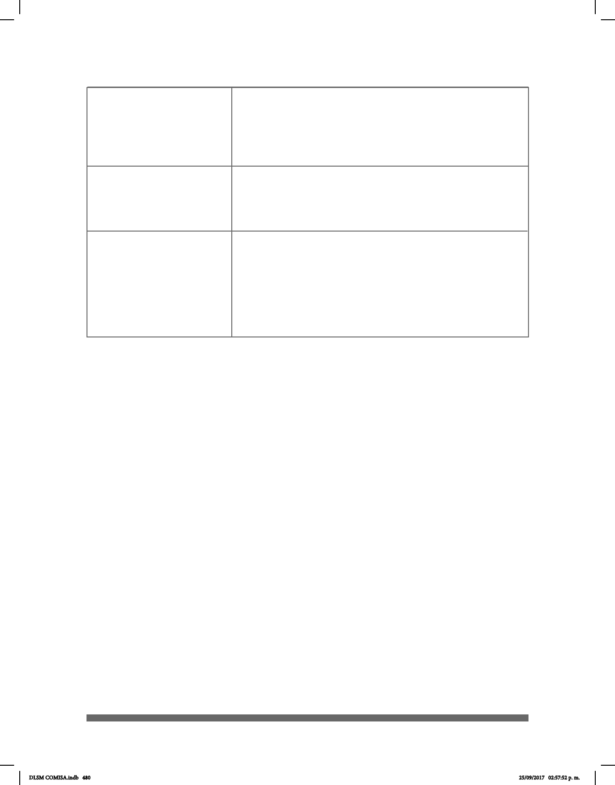

480
Artículo 32. Las personas con discapacidad tienen derecho a
la libertad de expresión y opinión; incluida la libertad de recabar,
recibir y facilitar información […] Para tales efectos, las autoridades
competentes establecerán entre otras, las siguientes medidas:
II. Promover la utilización de Señas Mexicana, el Sistema Braille,
y otros modos, medios y formatos de comunicación, así como el
acceso a los nuevos sistemas y tecnologías de la información y las
comunicaciones, incluido Internet;
Capítulo VIII
Deporte, Recreación,
Cultura y Turismo
Artículo 26. El Consejo Nacional para la Cultura y las Artes,
diseñará y ejecutará políticas y programas orientados a:
V. Impulsar el reconocimiento y el apoyo de su identidad cultural
y lingüística especíca, incluidas de Señas Mexicana y la cultura de
los sordos.
Capítulo IX
Acceso a la justicia
Artículo 29. Las instituciones de administración e impartición de
justicia contarán con peritos especializados en las diversas disca-
pacidades, apoyo de intérpretes de Lengua de Señas Mexicana,
así como la emisión de documentos en Sistema de escritura Braille.
Capítulo X
Libertad de Expresión,
Opinión y Acceso a
DLSM COMISA.indb 480 25/09/2017 02:57:52 p. m.